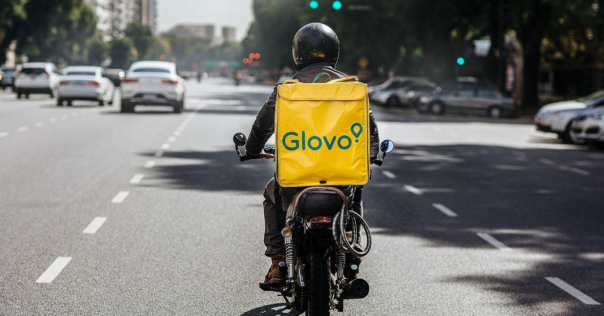

Станьте курьером-партнёром Glovo
Нажмите кнопку РЕГИСТРАЦИЯ чтобы начать:
РЕГИСТРАЦИЯ Почему Glovo?
Еженедельные выплаты
Деньги еженедельно автоматически поступают на ваш банковский счет.
 Гибкий график
Гибкий график
Вы составляете график согласно своим предпочтениям. Доставляйте тогда, когда захотите. Например, каждый день, по часу пару раз в неделю, только на выходных или по несколько часов в конце месяца.
Расширенное страховое покрытие
При выполнении доставок вы находитесь под надежной защитой страхового полиса от Qover. Это спокойствие и финансовая защита, которых вы заслуживаете.
Начните зарабатывать сейчас!
РЕГИСТРАЦИЯ